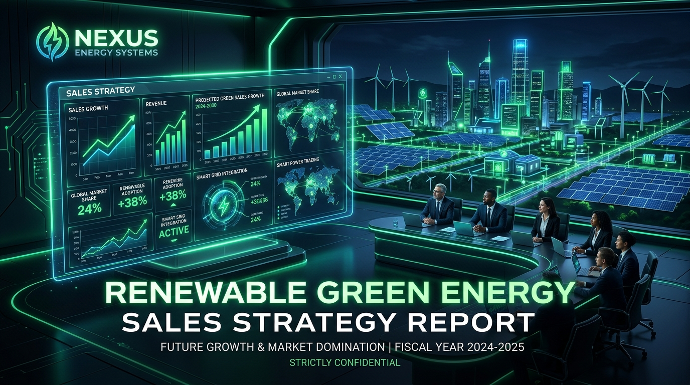
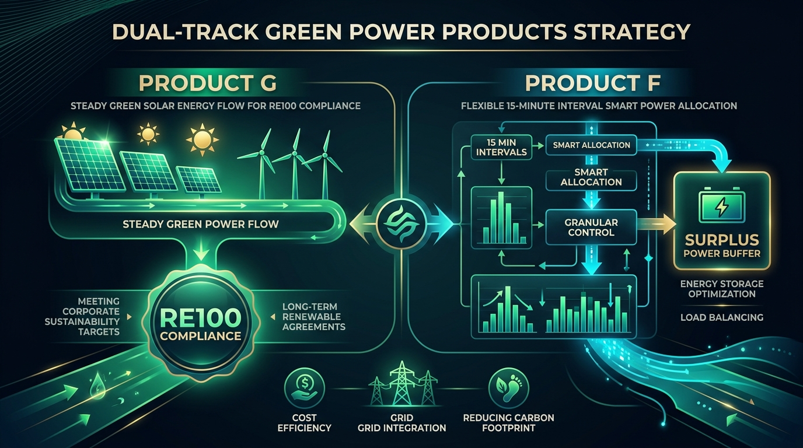
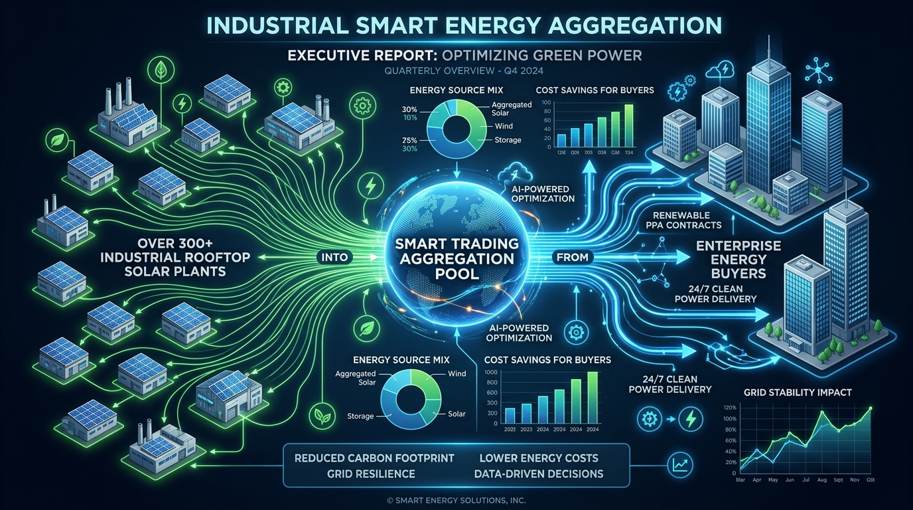
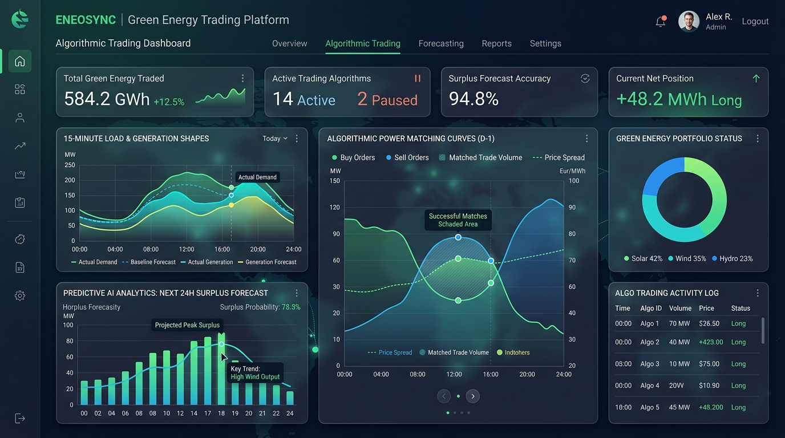

進能服（6692）
進軍再生能源售電業
董事會決策規劃報告 第三版 (v3)
簡報對象： 董事長、總經理、董事會成員
核心變更： 導入 POXA 產業第一手資訊、彈性分配雙軌機制、餘電聚合輔助供給與平台共建。

1.1 建議結論：封頂進入，雙軌商品，平台共建
Capped GO with Platform Strategy
L1 電能價差在試點期預期為虧損（雙軌加權中位年虧 465–632 萬元）。這是取得企業客戶終身價值的通路取得成本。
KPI 主軸為「錨定客戶家數」與「每家客戶取得成本（CAC）」，而非單純追求轉供度數規模。
完整試點 ＋ 平台共建會超支 58 萬。建議採取「選項丙」（平台降至 400 萬 + 規模下修至 15–20 GWh），使緩衝回到 192 萬 (6.4%)。
雙軌並行會提高營運複雜度，可行性完全繫於 POXA 平台。若合作未成，雙軌應退回單軌（一般轉供）。
1.2 六項建議決議 vs 1.3 五項否決條件
明確的公司治理防線與管控節點
📋 六項建議決議 (v3 提報)
| 決議項目 | 建議內容 | 董事會管控點 |
|---|---|---|
| 1. 定位 | 企業客戶入口；L1 價差不列主 KPI | 每季檢視交叉銷售轉換率 |
| 2. 持照路徑 | 6692 本體申照，不採第三方或代售 | 客戶/資料/合約/現金流 100% 在集團內 |
| 3. 預算封頂 | 三年累計 3,000 萬元封頂 | 達 2,100 萬強制回董事會報告 |
| 4. 試點上限 | 15–20 GWh／年；單一買方 ≤ 30% | 佔比 > 20% 客戶須提保證金或保函 |
| 5. 代操模式 | 匹配委 POXA，帳務 ERP，T-REC 自理 | 法遵/定價/信用/合約核准不得外包 |
| 6. 平台共建 | 與 POXA 開發發電端與餘電預測模組 (400萬) | IP共有、獨家期、資料權未合意不得開始 |
🚫 五項否決條件 (Stop Rules)
2.1 POXA 會議 6 大產業第一手輸入
查證基準：2026-02-13 POXA 專家會議揭露
| # | 輸入內容【會議輸入】 | 對進能服的戰略意義 | 影響評估 |
|---|---|---|---|
| 1 | 彈性分配取消二次匹配，餘電須於 15 分鐘內即時用掉 | 直接惡化純光電售電之單位經濟與餘電比率 | 壞消息 (-0.095元/度) |
| 2 | 純光電轉彈性分配後 R1 下滑；百貨業配適度高、24h工廠低 | 客戶篩選須加入「負載形狀維度」矩陣 | 策略調整 |
| 3 | 台積電綠電採購已達瓶頸，售電業開始出現餘電釋出 | 上游賣方市場鬆動；採購端議價能力顯著提升 | 好消息 (採購價下修) |
| 4 | 300+ 光電企業轉自發自用，餘電售台電僅 3.6 元，希望轉供 | 開啟進能服獨有的低成本「餘電聚合」供給池 | 好消息 (+0.11元貢獻) |
| 5 | 商業條款差異使匹配複雜，部分同業仍採人工匹配 | 軟體匹配能力是真實差異化護城河 | 核心能力 |
| 6 | 台電未提供即時資料，颱風敏感度分析難執行 | 產業共通限制；需多電源與客戶組合分散 | 風控注意 |
3.1 彈性分配制度代價與雙軌商品設計 (G/F)
依客戶需求分流，用商品 F 對沖商品 G 的餘電風險

| 比較項目 | 一般轉供 (無彈性) | 彈性分配 (新制) |
|---|---|---|
| 匹配機制 | 有二次匹配 (分段再配) | 無二次匹配 (15分鐘即時) |
| 餘電代價 | 餘電率約 5% | 餘電率上升至 15% |
| 淨損計算 | 餘電回售台電 3.6 元 vs 上游 PPA 4.55 元 → 每度損 0.95 元 | |
- 目標客戶：5,000 kW 義務用戶、RE100 供應鏈
- 特點：要求高 R1 與可稽核綠電比例，溢價較高
- 供給來源：一般 10–30 MW 可控 PPA 為主
- 目標客戶：不 Care R1、只求便宜綠電抵電費者 (商辦/連鎖/日間廠)
- 特點：定價較低，吸收商品 G 配不掉的餘電
- 供給來源：優先消化 300+ 案場之餘電聚合來源
4.2 客戶負載形狀與關係雙維篩選矩陣
精準對齊客群負載型態，解決純光電供給配適難題
| 優先級 | 目標客群 | 負載形狀 | 既有關係 | 適用商品 | 戰略與開發順序 |
|---|---|---|---|---|---|
| P1 第一優先 | 既有 O&M/EPC 中的白天型客戶 (單班廠、園區、商辦) | 高配適 (白天峰值) | 有深厚信任 | 商品 G 或 F | 唯一兼具信任與配適優勢，Phase 0 優先窮盡開發 |
| P2a 次優先 | 百貨、量販、連鎖通路、學校、醫院日間負載 | 最高配適【會議輸入】 | 無 (需冷開發) | 商品 G | 配適最佳但 CAC 較高，僅在 P1+P2b 不足 15 GWh 時啟動 |
| P2b 關鍵對沖 | 既有 24 小時工廠客戶，願接受低 R1 者 | 低配適 | 有深厚信任 | 商品 F | 以低價換取其吸收餘電，是餘電去化關鍵夥伴 |
| P3 否決拒接 | 24 小時工廠且堅持要求高 R1 者 | 低配適 | 不論 | — | 不主動開發——純光電供給下承諾絕對做不到 |
5.1 雙軌加權單位經濟推導 (每度淨貢獻 0.11 元)
餘電聚合 (+0.11元) 抵銷彈性分配 (-0.03元) 損耗後之財務試算
| 項目 | 金額 (元/度) | 說明與推導邏輯 |
|---|---|---|
| 下游加權售價 | 5.20 | 商品 G 高、商品 F 低，加權平均 |
| 上游加權採購 | -4.44 | 0.8×4.55(一般PPA) + 0.2×4.00(餘電聚合) |
| 毛價差 | 0.76 | 較 v2 (0.65) 改善 0.11 元 (餘電效益) |
| 轉供費【已查證】 | -0.3052 | 2026 全年法定轉供費率 |
| 備用容量成本 | -0.05 | 光電 3.3% 比例計算 |
| 作業成本 | -0.10 | POXA 平台訂閱與外部對帳 |
| 餘電與補量損失 | -0.13 | 彈性分配代價 (0.7×0.10 + 0.3×0.20) |
| 信用與融資成本 | -0.06 | 買方信用風險貼現與資金占用 |
| 每度淨貢獻 (中位) | +0.11 | 較 v2 的 0.03 元顯著改善 |
5.3 試點期年損益 4 大情境模擬 (20 GWh 規模)
試點期本業預期年虧 465–598 萬，定位為企業客戶通路成本
| 情境名稱 | 年貢獻 (萬) | 固定成本 (萬) | 年損益 (萬) | 戰略評估與處置 |
|---|---|---|---|---|
| A. 僅訂閱 POXA | 220 | 685 | -465 萬 | 純訂閱模式，固定成本較低 |
| B. 含平台共建 (建議) | 220 | 818 | -598 萬 | 多虧 133 萬/年換取平台 IP 資產 |
| C. 餘電聚合達 40% | 440 | 818 | -378 萬 | Phase 2 供應鏈擴充努力方向 |
| D. 25 GWh 樂觀打平 | 875 | 818 | +57 萬 | 需規模、淨貢獻、餘電同時達標 |
*固定成本含：2–3 FTE 人力 495萬 + 系統訂閱 100萬 + 平台攤提 133萬 + 法務營運 90萬 = 818萬元/年。
5.4 三年 3,000 萬投資預算與選項丙防超支方案
試算發現平台共建硬約束，採取選項丙確保緩衝 192 萬 (6.4%)
| 調整選項 | 具體作法 | 釋出金額 | 代價與影響 |
|---|---|---|---|
| 選項甲 | 平台共建降至 400 萬 (砍 Phase 3 保留款) | 100 萬 | 不影響核心功能 |
| 選項乙 | 試點規模下修至 15–18 GWh | 150 萬 | 營運資金占用減少 |
| 選項丙 (建議) | 甲 ＋ 乙 併行採行 | 250 萬 | 緩衝回到 192 萬 (6.4%) |
6.2 餘電聚合 (300+既有案場) 與背靠背防線
將 300+ 光電業主餘電轉換為競爭優勢，並建構零風險合約條款

- 信任前置：300+ 光電廠均為既有 EPC/O&M 客戶，無需冷開發成本。
- 資料優勢：掌握 O&M 監控、發電績效與故障資料，發電與餘電預測極準確。
- 低採購成本：業主售台電僅 3.6 元，進能服以 4.0 元收購達成雙贏。
🛡️ 背靠背 (Back-to-Back) 合約 5 大核心設計原則
上游餘電採購一律為「有多少收多少」，絕不承諾最低收購量。
對應下游客戶不享保證量請求權，優先配給不 care R1 之 F 客戶。
單案餘電 < 500 kW 不收；上游電量不足時下游免責賠償。
7.1 POXA 平台合作與 400 萬共建模組範疇
補齊發電端與餘電預測短板，外部化演算法與系統負擔

| 能力模組 | POXA 現況 | 進能服優勢 | 合作決定 |
|---|---|---|---|
| 匹配與轉供試算演算法 | ✅ 已成熟，服務前十大 | ❌ 無 | 委由 POXA 訂閱 |
| 發電端與餘電預測模組 | ❌ 明確表示沒有 | ✅ 348座案場數據 | 共同開發 (400萬上限) |
| 帳務、出帳與對帳 | ❌ 明確排除 | ❌ 無 | ERP ＋ 外部代操 |
| T-REC 綠電憑證作業 | ❌ 未提及 | ✅ 有發電團隊 | 進能服自理，不外包 |
1. IP 歸屬共有/授權 | 2. 12–24 個月競爭對手獨家期 | 3. 客戶與案場資料歸屬進能服 | 4. 30-60 日退出移轉機制 | 5. 競業與資料隔離稽核權 | 6. 外售分潤權利。
9.1 大自然能源電業口徑統一與關係人風控
確保獨立營運與對外資訊揭露品質一致性
董事會兩次確認：大自然能源電業與進能服（6692）無股權關係。視為一般第三方交易對手，適用一般信用審查與合約標準。
2026-02-13 會議記錄中曾出現「第九名是我們轉投資的大自然」之陳述。法務須於 Phase 0 出具書面確認，統一對外溝通口徑，確保法義無漏洞。
【待確認】釐清母公司進金生國際層面是否有投資關係。若有，大自然屬關係人，交易須走關係人交易程序與公允性檢視。
10.1 分階段計畫藍圖與 Gate 0 / 1 / 2 門檻
嚴格實施階梯式投入與階段性量化審查機制
| 階段名稱 | 期間與人力 | 核心任務 | Gate 通過門檻與檢核點 |
|---|---|---|---|
| Phase 0 可行性驗證 |
0–6 個月 1.0 FTE (專責) |
POXA 雙軌試算、300+ 客戶負載與餘電盤點、POXA 合約談判、CPPA 詢價 |
Gate 0 門檻： • 供給管線 ≥ 15 GWh/年 • 錨定客戶 LOI ≥ 1 家 (需為 P1 客戶) • 詢價加權淨貢獻 ≥ 0.10 元/度 • POXA 4 大護城河條款完成談判 |
| Phase 1 申照與建置 |
6–12 個月 2.0 FTE |
能源署申照、資本額變更 (≥500萬)、定稿 G/F 合約範本、POXA 介面對接 |
Gate 1 門檻： 牌照到位；G/F 兩套標準合約定稿；累計投入 ≤ 650 萬元。 |
| Phase 2 受控試點 |
12–36 個月 3.0 FTE |
年化 15–20 GWh、雙軌運行、共建發電與餘電模組 (250萬) |
Gate 2 門檻： 錨定客戶 ≥ 6家；每家 CAC ≤ 300萬；餘電去化率 ≥ 85%；累計 ≤ 3,000萬。 |
12. 董事會決議草案最終版本 (13 項條文)
提請董事會審議並授權經營團隊執行
- 原則同意以取得企業客戶入口為單一主要目的進入再生能源售電業；電能價差不列為主要成功指標。經營團隊已明確報告：試點期本業預期年虧 465–632 萬元。
- 核定三年累計投入上限新台幣 3,000 萬元（含平台共同開發 400 萬）。採選項丙規劃投入為 2,808 萬，緩衝僅 192 萬 (6.4%)。累計達 2,100 萬時主動回報。超過上限應停止，不得追加。
- 持照主體由進能服本體申照，不採第三方代售。
- 再次確認大自然能源電業與本公司無股權關係；授權法務出具書面確認並釐清集團層面是否存在投資關係，同時統一對外口徑。
- 授權經營團隊於 6 個月內完成 Phase 0，並指派專責負責人 1 人，明確調整其現職職掌。
- 核准與 POXA 之合作，開發範圍限定於「發電端與餘電預測模組」，三年投入上限 400 萬元。 IP 歸屬、對其他售電業之獨家期間、客戶資料所有權、退出移轉四項條款未達成合意前，不得投入開發資源。
- 第一階段規模上限為年化 15–20 GWh、單一買方 ≤ 30%（佔比 > 20% 者須提保證金或保函）、單一供給來源 ≤ 35%、首批合約年期 3–5 年。
- 同意採一般轉供（商品 G）與彈性分配（商品 F）雙軌並行、依客戶分流。 若 Gate 0 之雙軌可行性未獲證明，應退回單軌並重估規模。
- 餘電聚合列為輔助供給；相關上游契約一律採無保證量，且對應之下游客戶不得享有補量請求權。
- 所有售電合約必須包含：背靠背八項對齊、change-in-law／費率 pass-through、合約可轉讓條款。缺任一項不得簽署。
- 未達 Gate 0 或 Gate 1 之量化條件，不得簽署任何具重大固定量或固定價風險之合約。
- 財務單位應於正式簽約前取得會計師對 IFRS 15 主理人／代理人及總額／淨額認列之書面評估。
- 內部稽核應將定價、信用、契約、轉供、T-REC、結算、付款、平台合作之資料權限與法定申報納入稽核計畫。
13. Phase 0 尚待回答的 9 大關鍵問題
經營團隊在 Phase 0 必須執行的盡職調查 (DD) 清單
| # | 尚待回答問題 | 權責單位 | 最高檢核價值 |
|---|---|---|---|
| 1 | 既有 300+ 光電客戶與 O&M 客戶的負載形狀分布為何？ (白天型 vs 24h 型 kW) | 運維管理 (4.6) | 客戶策略與商品 F 吸收量分母 |
| 2 | 單一 5,000 kW 級工業客戶，三年內 O&M/EMS/BESS 累計毛利實際是多少？ | 業務開發 (4.1) | CAC (176-293萬) 投資判斷式分母 |
| 3 | 餘電聚合真實可得規模？ (餘電 ≥ 500 kW 者有幾家) | 運維管理 (4.6) | 校正 §5.1 加權採購價 |
| 4 | POXA 平台能否同時支援雙軌匹配試算？ | 研發對口 (3.4) | 雙軌決議執行基礎 |
| 5 | 進金生國際 (集團) 層面是否持有大自然股權？ | 法務 (3.8) | 關係人交易合規升級 |
| 6 | 專責負責人是誰，從哪個現職調出？ | 總經理室 | 執行到位保證 |
| 7 | 董事會可接受連續幾年售電本業虧損？ | 董事會 | 465-598 萬/年虧損預期確認 |
| 8 | 售電與特定電力供應業是否共用同一交易平台？ | 研發/運維 | 系統重複投資排除 |
| 9 | 會計認列 (總額/淨額 IFRS 15) 如何影響對外營收？ | 財務 (3.5) | 資本市場溝通品質 |
董事會核心決策與一頁總結
建議結論：封頂進入，雙軌商品，平台共建 (Capped GO with Platform)
進能服應取得再生能源售電業執照，定位為企業客戶入口；並與 POXA 共同開發綠電銷售雲平台，把匹配與試算的複雜度外部化，換取 2–3 人編制下經營雙軌商品的能力。
市場轉折、制度變革與雙軌商品策略
詳細說明彈性分配（無二次匹配）對純光電之影響，以及如何透過商品 G 與商品 F 達成風險對沖。
財務單位經濟與餘電聚合模型
推導每度淨貢獻 0.11 元、試點期年虧損 465–598 萬，以及採納選項丙防範 3,000 萬預算超支之具體路徑。
POXA 合作、風控防線與執行藍圖
涵蓋平台共建模組、6 大護城河條款、大自然能源口徑統一，以及 Phase 0~3 分階段 Gate 機制。